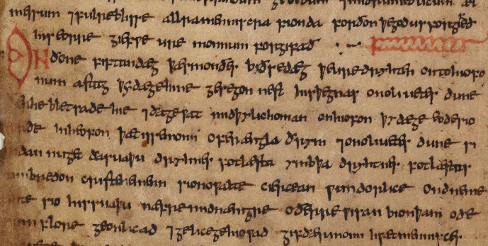

Грамматика древнеанглийского языка

Грамматика древнеанглийского языка — довольно сильно отличается от грамматики современного английского языка. Будучи одним из древних германских языков, древнеанглийский имеет морфологическую систему, которая аналогична прагерманской, сохранив многие из изменений, которые были распространены в праиндоевропейском языке, а также характерные элементы германской грамматики, например, умлаут. Среди живых языков, морфология древнеанглийского языка ближе всего к современному исландскому языку, который является одним из самых консервативных германских языков; в меньшей степени древнеанглийский похож на современный немецкий язык. В древнеанглийском языке существительные, местоимения, прилагательные и определения имели пять падежей (именительный, винительный, родительный, дательный и творительный), два грамматических числа (единственное и множественное) и три грамматических рода (мужской, женский и средний род). Первое и второе лица личных местоимений имели двойственные формы для обращения к двум людям, также имели обычные формы единственного и множественного числа. Варианты в творительном падеже было довольно редки и существовали только в мужском и среднем роде единственного числа. Они часто заменялись дательным падежом. Прилагательные, местоимения и (иногда) причастия согласовывались с предшествующими существительными в числе и поле. Глаголы согласовывались в лице и числе. В древнеанглийском языке существовала сложная система склонений с большим разнообразием окончаний. Глаголы имели девять основных спряжений (семь сильных и два слабых), все с многочисленными подтипами, а также несколько прочих спряжений и несколько неправильных глаголов. Главное отличие древнеанглийского от других древних индоевропейских языков, таких как латынь, было то, что глаголы имели сопряжения в только двух временах (против шести в латыни). Грамматический род существительного не обязательно соответствовал истинному полу, даже для существительных, относящийся к людям. Например, слово sēo sunne (солнце) было женского рода, слово se mōna (луна) было мужского рода, и þæt wīf «женщина/жена» было среднего рода.
Морфология
Глаголы
Глаголы в древнеанглийском языке разделялись на сильные и слабые глаголы. В сильных глаголах важными были комбинаторные изменения, которым подверглись гласные в разных позициях. Слабые глаголы были производными от других слов при помощи суффикса. Главное различие между этими двумя типами глаголов состояло в том, что слабые глаголы, в отличие от сильных, использовали в прошедшем времени дентальный суффикс (-d-, -t-, -ð- и др.): слабый глагол deman (судить) в прошедшем времени — dem-d-e— , а сильный глагол helpan (помогать) в прошедшем времени — healp.
Сильные глаголы
- ī + одна согласная. 1-й класс образуются либо от существительного, либо от других глаголов. У правильных глаголов 1 класса корневой гласный во всех формах подвергся nepeгласовке под влиянием элемента -i в суффиксе. В 1-м классе было 11 неправильных глаголов.
- ēo или ū + одна согласная.
- Значение и форму суффикса трудно вычленить: -ai- или -ē-. Глаголы, имеющие после чередующегося гласного h или Ʒ + согласный.
- е + согласная (обычно l или r,, плюс глагол brecan 'сломать'). В 4 классе имеются специфические глаголы с особой фонетикой.
- е + согласная
- а + согласная. В древнеанглийском языке 6 класс распался на два варианта: вариант с 'а' в основе настоящего времени и вариант с 'е' и удвоенным согласным в основе настоящего времени.
- Всегда корневое слово (либо долгое гласное или короткое + два согласных). Включает в себя глаголы, которые ранее образовывали прошедшее время с помощью частичного удвоения корня (haitan называть — haihait назвал).
Легкие корни глагола состояли из короткого гласного с последующим однократным согласным, в то время как все остальные были тяжелые. Третий класс глаголов разделялся на пять подклассов:
- е + две согласных (кроме слов, начинающихся с L).
- eo + r или h + другая согласная.
- e + l + другая согласная.
- g, c, или sc + ie + две согласных
- i + nasal + еще одна согласная.
Претеритно-презентные глаголы
В претерито-презентных глаголах формы настоящего времени по происхождению являются формами прошедшего времени . Указанные формы образованы по образцу сильного прошедшего. В древнеанглийском у претерито-презентных глаголов были также формы прошедшего времени, однако они, как и все неличные формы, были новообразованиями. Современные глаголы can, may, shall и др. относятся к единственному числу настоящего времени. Глаголы ought и must восходят к прошедшему времени, то есть являются дважды претерито-презентными.
Неправильные глаголы
Существует группа из четырех глаголов, которые являются неправильными: «want» (современное «will»), «do», «go» и «be». Это наиболее часто используемые глаголы в языке. Спряжения глаголов 'to do' gān 'to go', willan 'to want' в настоящем времени.
Глагол 'to be' имел три разные формы
Существительные
Существительное в древнеанглийском языке имело пять падежей: именительный, винительный, дательный, родительный и остатки творительного . Кроме того, существительные имели разные окончания в зависимости от того, является ли существительное в единственном числе (например, hring «одно кольцо») или множественном числе (например, hringas «много колец»). Существительные также подразделяются на грамматические рода — мужской, женский и средний род. Мужского и средний рода слов различаются окончаниями, а женский род имеют собственное подмножество окончаний. Кроме того, древнеанглийские существительные делятся на сильные или слабые. Слабые существительные имеют свои окончания. В общем, слабые существительные являются менее сложными, чем сильные существительные, поскольку они начали терять свою систему склонений.
Прилагательные
Прилагательные в древнеанглийском языке склоняются также, как и категории, как существительные: пять падежей (именительный, винительный, родительный, дательный и творительный), три рода (мужской, женский, средний род) и два числа (в единственном числе, множественное число). Кроме того, в древнеанглийском языке различалось два типа склонения прилагательных: сильное (неопределенное) и слабое (определенное)
Слабое склонение прилагательных аналогично склонению существительных с основами на -n, кроме формы родительного падежа множественного числа, в которой прилагательные имеют окончание -ra (из сильного склонения), вместо -еnа или -nа. Для образования форм степеней сравнения прилагательных использовались суффиксы: сравнительную степень характеризовал суффикс -r-, превосходную st- (betst). Кроме того, в форме превосходной степени перед суффиксом обычно ставилась соединительная гласная, которая выступала в двух вариантах: варианте -е- и варианте -о-.
Числительные
В древнеанглийском языке названия liсел от 1 до 12 представлены своими корнями. Числа с 13 до 19 образовывали путем сложения оcнов числительных, oбозначающих единицы, и числительного tīen (tyn, tēn), например: fiftīene — 15; eahtatīene — 18; nigontīene — 19 и др. Порядковые числительные, начиная с четырех, образовывали прибавлением суффикса -þa (если корень количественного числительного оканчивался на гласный или сонорный согласный), и -ta (если корень оканчивался на глухой согласный). При этом конечный -n перед суффиксом-þa выпадал. Количественные и порядковые числительные изменялись по падежам. Падежные формы количественных числительных совпадали с формами сильного склонения прилагательных, а падежные формы порядковых числительных — с формами слабого склонения прилагательных.
Предлоги
Предлоги в древнеанглийском, как в современным английским часто употребляются со словами, которые они регулируют, в этом случае они называются послелогами. Кроме того, если объект предлога был в дательном падеже, то предлог мог быть расположен в любом месте в предложении. В древнеанглийском языке предложение могло быть бесподлежащным (Norðan sniwde — it was snowing in the north) и неопределенно-личным, которое могло строиться с помощью местоимения man. Роль предлогов в этот период сводилась в основном к уточнению значений падежных отношений.
Местоимения
В древнеанглийском языке были различные классы местоимений: личные, притяжательные, указательные, вопросительные, относительные и неопределенные. Система склонения различных типов местоимений была неодинаковой. Личные местоимения имели грамматические категории, сходные с категориями существительного. Все остальные местоимения склонялись подобно существительным, за исключением того, что в отличие от них некоторые местоимения имели пять падежных форм, добавляя форму творительного падежа. В древнеанглийском местоимения также имели двойственную форму (для разговоров о группах из двух лиц, например «нас двое» или «два»). Несмотря на то, что двойственная форма местоимений редкоиспользовалась в древнеанглийском, она сохранилась и в современном английском языке.
Многие древние формы местоимений имеют аналоги в современном английском языке: например, в родительном падеже ēower стало «your», ūre стало «our», mīn стало «mine». В результате проходившей диссимиляции некоторые формы местоимений не соответствуют их современным эквивалентам. Женское именительное hēo в какое-то время заменялось на женское именительное sēo, уступая «she».
Синтаксис
Древнеанглийский синтаксис был во многом похож на современный. Главным в синтаксисе являются способы создания предложения и изучение различных образцов предложения. Основные принципы построения предложения в ходе истории английского языка остались неизменными. Изменения произошли в способах сочетания слов. Основную роль в создании предложения в древнеанглийском принадлежало сказуемому, выраженному личной формой глагола. Подлежащее в древнеанглийском предложении характеризовалось именительным падежом. В сложно-подчиненных предложениях отсутствовали специальные слова для соединения придаточных предложений.
Порядок слов
В древнеанглийском языке существовал свободный порядок слов в предложении. Однако под свободным порядком слов понималась возможность лишь небольшого отступления от обычной последовательности. Такой последовательностью была: подлежащее + сказуемое + дополнения + обстоятельства. Определение часто предшествовало определяемому слову. Свобода слов иногда использовалась для выражения направления. Так в предложении Buton on feawum stowura stycce — maelum wlciaS Finnas подлежащее Finnas находится на последнем месте и является словом, которое вводит в предложение новую мысль.
Фонология
Фонология древнеанглийского языка изучается в основном по письменным источникам. Существует очень большой пласт текстов на древнеанглийском языке, свидетельствующих о фонологических чередованиях довольно точно. По этим материалам делаются определенные выводы о характере древнеанглийской фонологии.